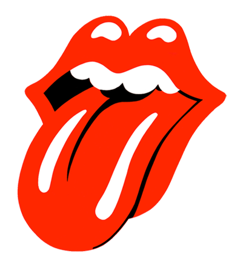

La mejor banda inglesa de los siglos XX y XXI"
Home
Discografia
DISCOGRAFIA
Disco
Fecha de Lanzamiento
Título
16 de abril de 1964
The Rolling Stones
30 de julio de 1965
Out of Our Heads
20 de junio de 1966
After Match
6 de diciembre de 1968
Beggars Banquet
5 de diciembre de 1969
Let It Bleed